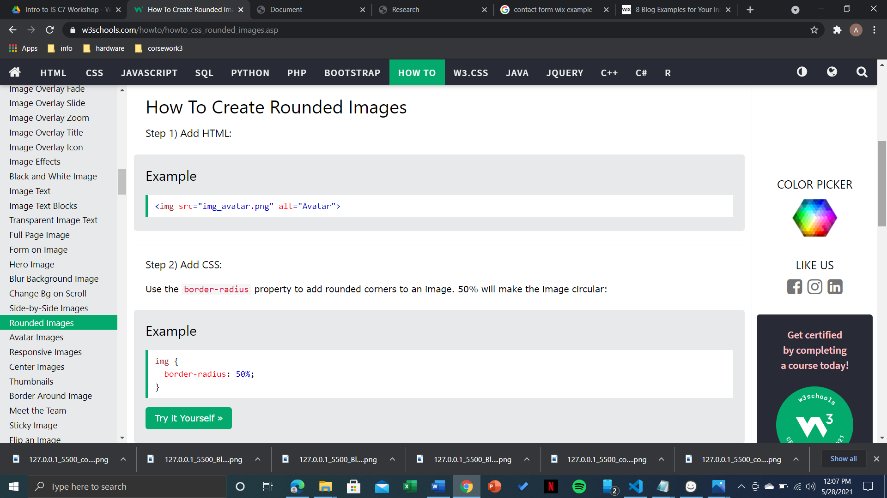

| Visit the page
On the leftside, it is a sample from where I took the reference to create my home page which is on the right side. I added background and boxes and written some text there.I added a footer where my photo was displayed in round along with copyright licence message |
||
| Visit the page On the leftside, it is a sample from where I took the reference to create my contact page. background image was added ,contact box was given salamon color and I also added a feild gender. |
||
| Visit the page On the leftside, it is a sample from where I took the reference to create my CV page. It is divided into two sections and i tried to recreate it .On the left section, picture and introduction were added whereas on the right side section, qualifications and details where added. I gave background colors to the boxes where details are kept |
||
| Visit the page On the leftside, is a sample from where I took the reference .My blog was about "Impacts of Technology in out daily lives". I used different font-family and decoration to create it and I added background cointainer and gave it salamon color. Also "read more" and "read less" buttons where added.I added a footer too where my photo was displayed in a round manner along with copyright licence message . |
||
|  | ||
| Visit the page On the left side there is a website from where I took reference to create rounded image for my footer and my cv page. W3schools was very helpful while designing the website. |
||